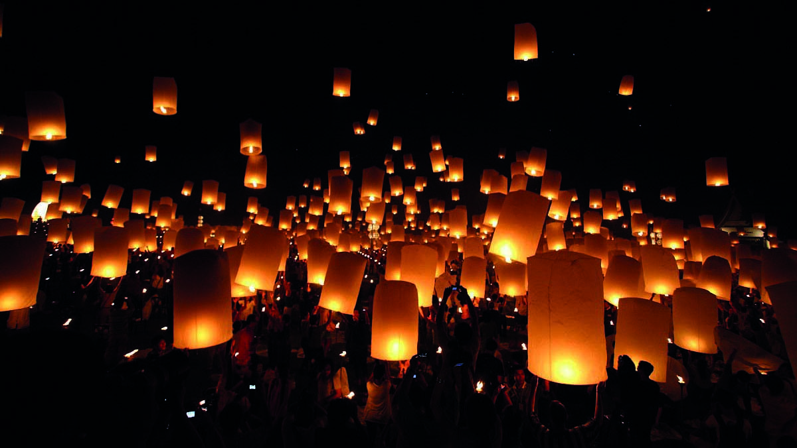
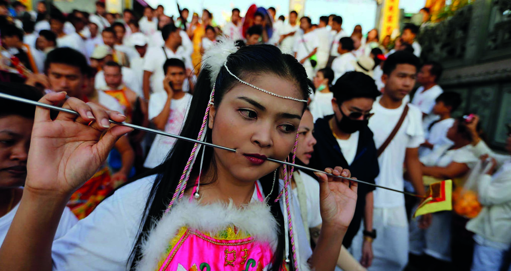
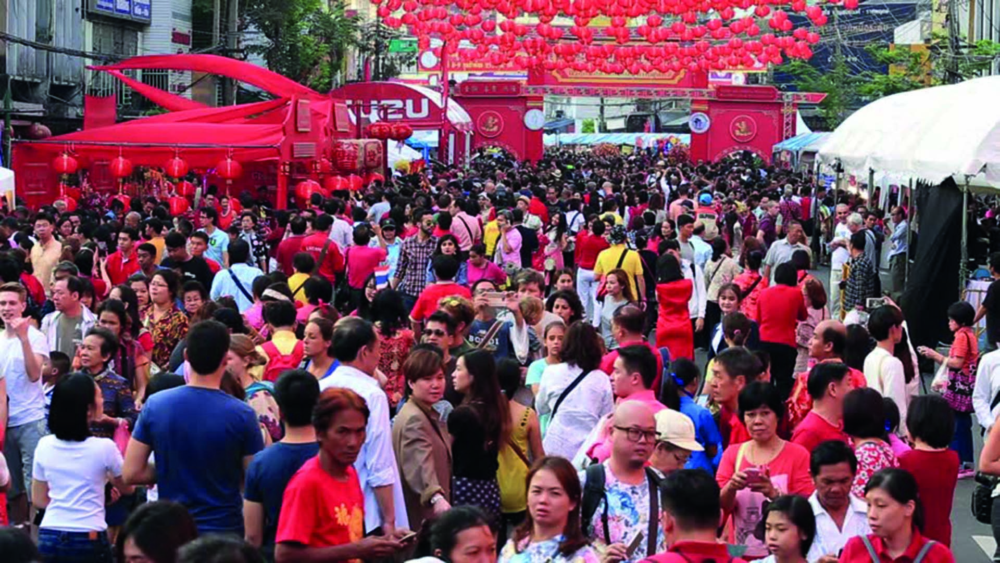
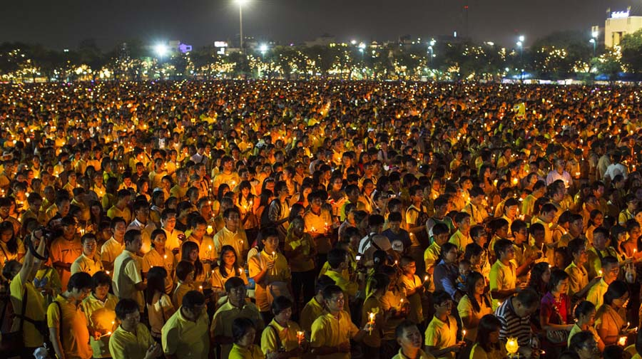
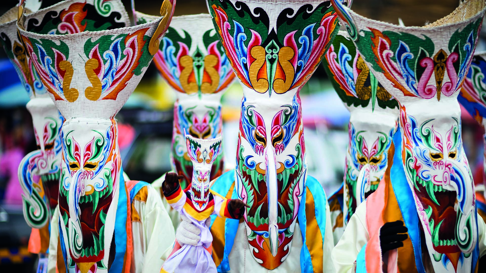
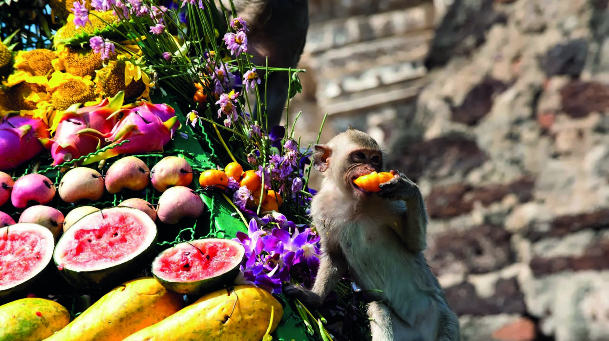
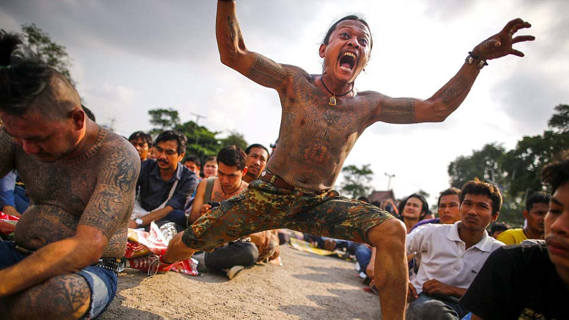
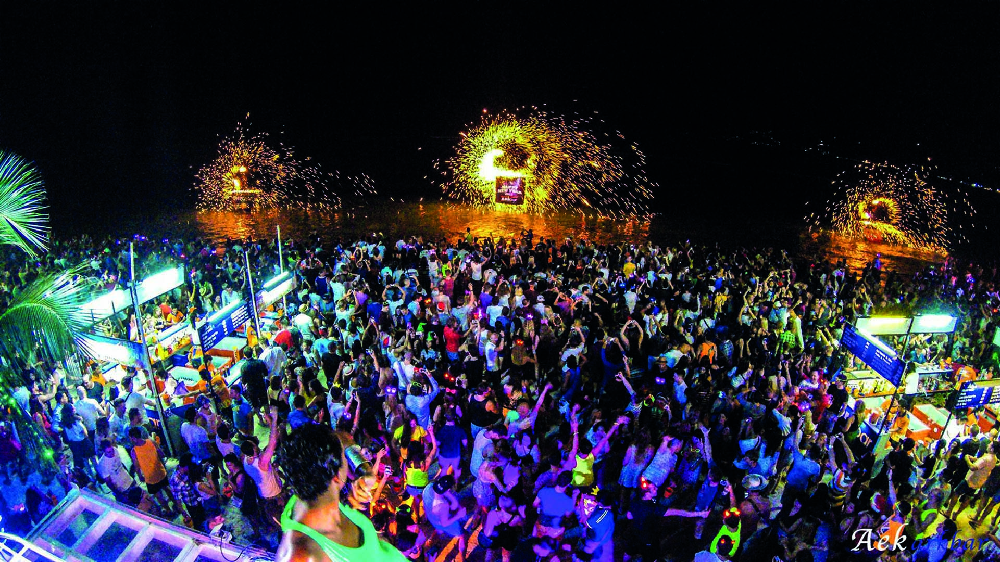
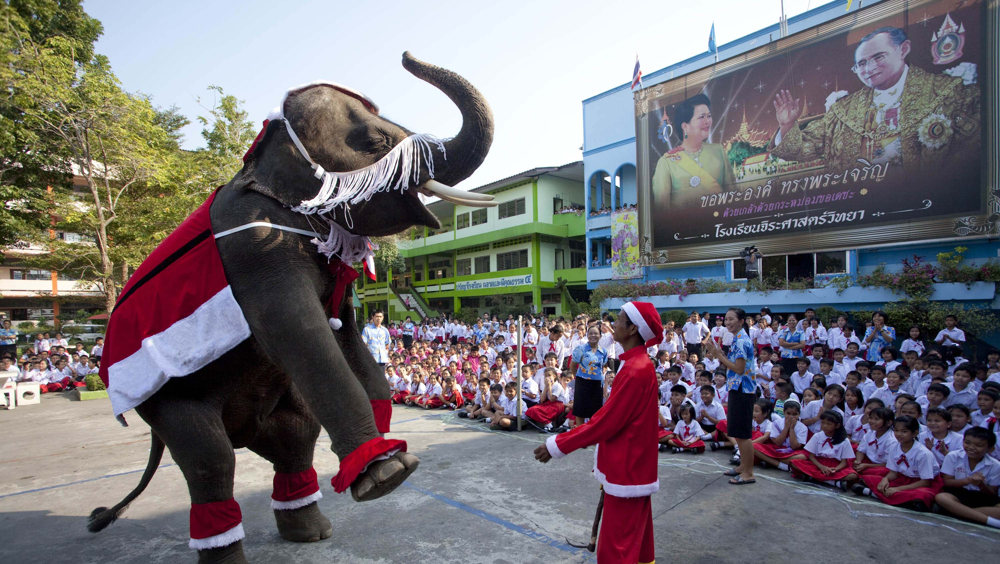

El Songkran: La Guerra d’aigua (13-15 d’Abril). És l’any nou budista (actualment el 2555). És probablement la festa més important de Tailàndia. Tradicionalment la gent mullava a les figures de Buda i a la gent gran per a mostrar respecte, però amb el temps la festa s’ha convertit en una guerra d’aigua bestial, moltes vegades barrejada amb grans quantitats d’alcohol.

El Loi Krathong: Mostrant respecte a l’aigua. Quan la lluna plena del mes de novembre apareix, milers de tailandesos es dirigeixen a rius, llacs i pantans a posar el seu Loi Krathong. Els Loi Krathong són barquetes fetes de fulles amb espelmes que suren sobre l’aigua. A Chiang Mai els Loi Krathong a més de surar, volen. Al nord és tradició deixar volar milers de petits globus aerostàtics.

El Festival Vegetaria de Phuket: Pírcings a lo bèstia (Octubre). La turística illa de Phuket celebra cada any aquesta festa en honor a déus taoistes. Durant els 10 dies que dura el festival, a més de no poder menjar carn, tampoc es poden tenir relacions sexuals ni beure alcohol. El més cridaner del festival és sens dubte el ritual extrem de devoció en el que es perforen la cara amb ganivets i agulles.

L’any nou Xines: La festa de Chinatown (finals de Gener). L’any nou xinès és una de les majors festes del planeta. A la Xina provoca la migració humana anual més gran del món amb 200 milions de xinesos tornant al seu poble natal. A Tailàndia, a l’haver molta gent amb arrels xineses, també se celebra aquesta festa. El barri xinès de Bangkok s’atura durant uns dies per celebrar-ho.

El cumpleanys dels reis: El Rei el 5 de desembre y la Reina el 12 d’Agost. Tant el 5 de desembre com el 12 d’agost són festes nacionals per l’aniversari dels reis. Durant els dos dies, milers de persones es vesteixen amb el color símbol de la monarquia, que actualment es el rosa (antigament era el groc), i es reuneixen al carrer Rachadamnoen (prop del Gran Palau) per celebrar-ho.

El Phi Ta Khon: La festa dels fantasmes (22-23 de juny). Els tailandesos són, en general, molt supersticiosos i molts solen creure en fantasmes. Prova d’això és aquest festival que es celebra al poble de Dan Sai, al nord-est de Tailàndia, i en el qual un munt de gent es disfressa de fanstasma. És una espècie de halloween tailandès amb molt whisky d’arròs.

El buffet par a monos: La festa dels primats (últim diumenge de novembre). El petit poble de Lopburi és famós per les seves ruïnes i la seva enorme quantitat de micos. Fa uns 20 anys un empresari local va posar un bufet lliure per als micos per agrair-los portar tants turistes. Ràpidament la idea va agradar i es va convertir en una tradició.

El Festival dels tatuatges: La celebració més rara (Març). Aquest és potser una de les festes més peculiars del país. Durant el festival dels tatuatges que se celebra al temple Wat Bang Pha, centenars de persones fan cua per aconseguir un dels tatuatges màgics tailandesos. Es creu que aquests tatuatges atorguen tota mena de poders.

La Full Moon party: La major festa motxillera (cada nit de lluna plena). Aquesta no és una celebració religiosa ni nacional, sinó que més aviat alcohòlica turística. La Full Moon party és probablement la major festa a la platja del món. Cada mes de lluna plena entre 15 i 30 mil persones es concentren en una de les platges de l’illa de Koh Phangan a ritme de música electrònica.

El Nadal: La festa dels centres comercials. És interessant veure com es celebra el Nadal a un país en el qual per tradició no s’hauria de fer. Els tailandesos són budistes, així que el nadal no pinta molt en la seva cultura. De totes maneres, tots els anys el Nadal pren Bangkok i altres ciutats tailandesas. Especialment en els centres comercials.
